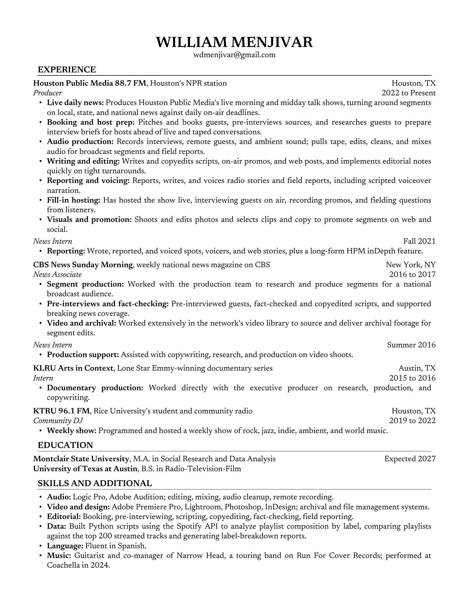

Résumé

Producer and talent booker. Email: wdmenjivar@gmail.com
Experience
Producer
2022 to presentHouston Public Media, News 88.7 FM, Houston
- Produce the station’s live midday news talk show, turning around segments on local, state, and national news against daily deadlines
- Pitch and book guests, pre-interview sources, and research guests to prepare interview briefs for hosts
- Record interviews, remote guests, and ambient sound; pull tape, edit, and mix audio for broadcast
- Write and copyedit scripts, on-air promos, and web posts
- Report, write, and voice radio stories and field reports
- Previously produced the morning news show and filled in as host, interviewing guests live on air
- Select clips and copy to promote segments on web and social
News Intern
Fall 2021Houston Public Media, Houston
- Wrote, reported, and voiced spots, voicers, and web stories, plus a long-form HPM inDepth feature
News Associate and Intern
2016 to 2017CBS News Sunday Morning, New York
- Researched and produced segments for a national broadcast audience
- Pre-interviewed guests, fact-checked and copyedited scripts, and supported breaking news coverage
- Sourced and delivered archival footage from the network’s video library
Intern
2015 to 2016KLRU’s Arts in Context, Austin
- Worked with the executive producer on research, production, and copywriting for a Lone Star Emmy-winning documentary series
Guitarist and Co-Manager
2017 to 2024Narrow Head (Run For Cover Records)
- Toured nationally and internationally, including Coachella in 2024
- Managed the band’s streaming presence and social media, and coordinated with the label and booking agency
Community DJ
2019 to 2022KTRU 96.1 FM, Rice University, Houston
- Programmed and hosted a weekly show of rock, jazz, indie, ambient, and world music
Education
- M.A., Social Research and Data Analysis, Montclair State University
- B.S., Radio-Television-Film, University of Texas at Austin
Skills
Talent booking, live production, rundowns and scripts, fact-checking, audio editing and mixing, Adobe Premiere Pro, Audition, Photoshop, Lightroom, InDesign, Logic Pro, WordPress. Built Python scripts using the Spotify API to analyze playlist composition by label, comparing playlists against the top 200 streamed tracks and generating label-breakdown reports. Fluent in Spanish.